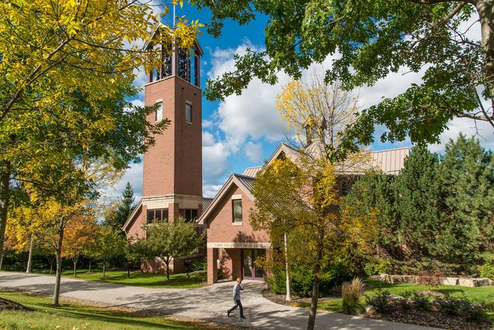

My Resume
Home
|
About
|
Gallery
|
Resume
Als Melons
I started working at Als in 2021 and I now work there during the Summer. My mom has been the manager there for 10 years.
Smith Chapel on campus

I've worked on campus for a few weeks and I love it.